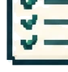

Interactive Learning
I design interactions around the decision, judgment, or behavior a learner needs to practice. Depending on the task, that can mean a custom assessment, a matching exercise, a scored decision tool, gamified practice, or an AI-supported conversation. The interaction earns its place by making the learner do something useful, not by adding clicks.
Interaction Design Methodology
The interaction type follows the learning need.
I start with the behavior the learner needs to practice. Recognition may call for sorting or classification. Comparison may need side-by-side evidence. Judgment may need a scenario. A complex response may need custom state, scoring, or model-backed feedback. The method comes before the mechanic.
Use visual emphasis, evidence, or a scenario cue to direct attention before asking the learner to act.
Examples
Two hands-on demos for two different kinds of learner judgment.
These demos show two different interaction patterns: classify evidence against a framework, then weigh opportunity evidence to make a pursuit decision.

Matching + ClassificationMEDDPICC Qualification Lab
Connect detailed discovery evidence to the MEDDPICC component it most directly supports, with immediate feedback and visible progress.
Pursuit Determination Lab
Move from opportunity evidence to criterion scores, then watch solution fit and pursuit strength change the recommended pursuit posture.